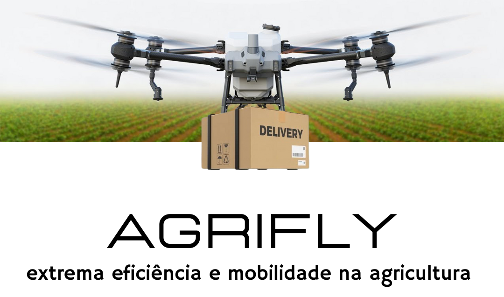
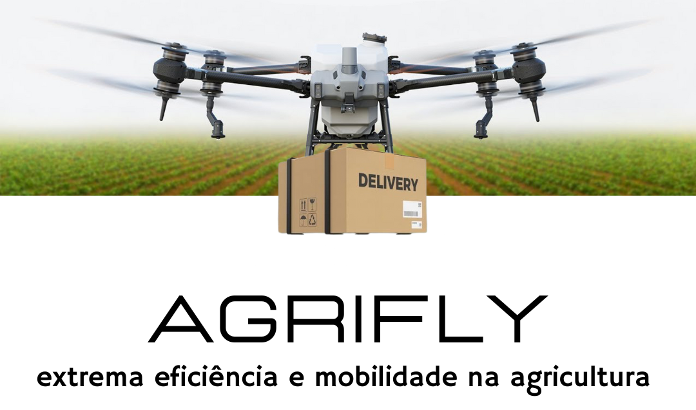
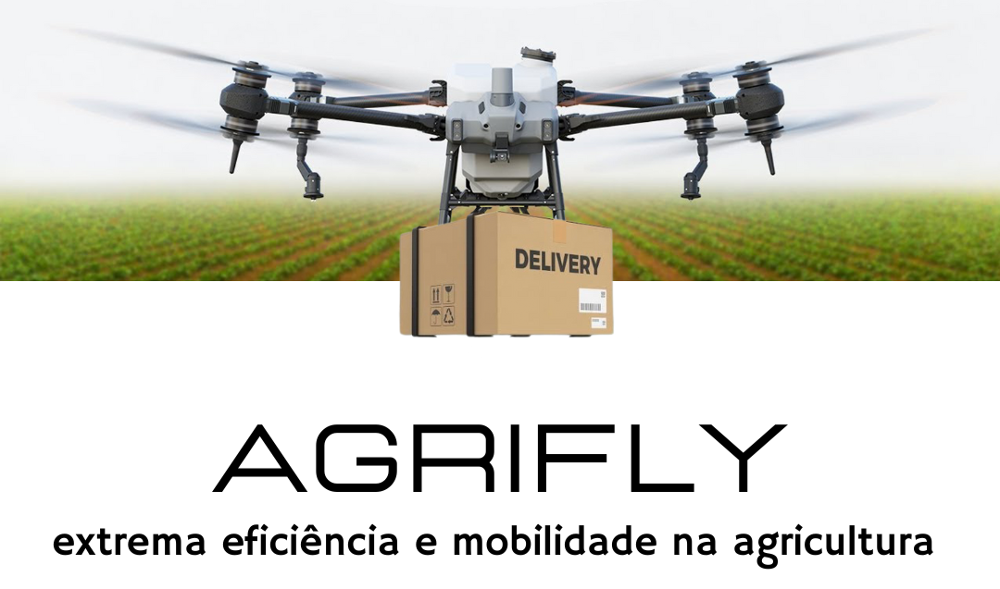
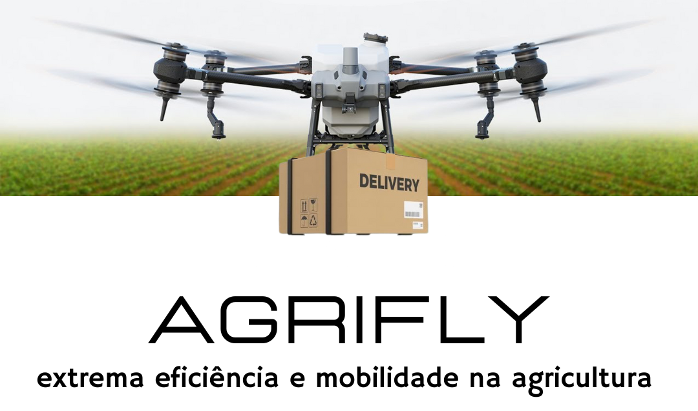

O Agrifly eleva as operações agrícolas de drones a novos patamares. Ele herda um poderoso sistema com dois motores e uma estrutura resistente ao torque para entregar a mais avançada estabilidade ao transportar até 40kg de insumos. Adquira o Agrifly e profissionalize ainda mais sua operação de entrega e cultiva!